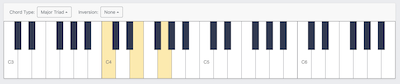

- A key refers to a piano key. The Piano begins on the C3 key and ends on B6 key.
- A chord is a combination of two or more notes played at the same time.
- A Chord Family is a group of chords that go together to produce a harmony.
- Chord Type refers to the different variations of families that there are. Each different Chord Family produces a different kind of sound.
- Chord Inversion is when you change what the lowest note in a chord is.
- A Chord Progression is a sequence of chords put together.
The Piano

- The default chord on the Piano is the Major Triad of the C3 chord. You may notice that this chord is displayed on the key above
- To hear this chord, simply click on it.

You may have noticed that when you press a key on the piano, other keys that you havn't pressed become highlighted. These other highlighted keys are the other notes that belong in your selected chord.
Chord Family

- Clicking on chord type button allows you to switch to the chord family that you want.
- As you click around the different chord families, the key that you have last clicked will be the key that the updated chord family comes from.
- We have 17 different types of Chord Families that you are able to use and play around with.
- Experiment with different different chords to try and achieve the right sound that you like!
Inversion

- Clicking on the chord inversion drop down, brings up a menu that has labels from "None" through "Third"
- As said above, a chord inversion is when you change the lowest note in a chord.
Progression

- A chord progression is a series of chords
- Choose which chord family you would like to add, and you can see the highlighted bubble change as you click around.
- Once you think you like this chord, press the circle with the "+" in it and it gets added
- If you want to copy this chord, you can press the copy button in the right corner or press the + button again
- If you want to restart, press the trash icon in the right corner and you will start from scratch at C3 Major Triad